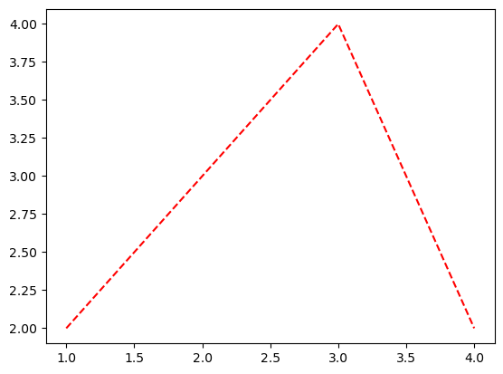
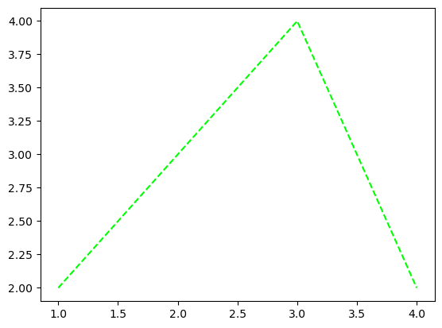
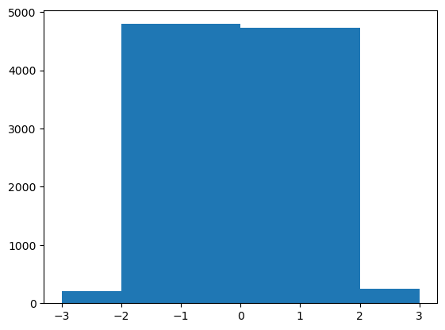

import time
import collections
import numpy as np
import pandas as pd
import matplotlib.pyplot as plt
import random14wk-2: 클래스 (4)

1. 강의영상
2. Imports
3. 코딩 문해력
A. 수용력과 이해력
- 수용력 테스트1: 2주차-2
\(f(x)=x^2\)위의 임의의 점을 입력하면 접선을 리턴하는 함수를 구현하라.
def make_func(x0):
f = lambda x: x**2
def func(x):
h = 0.0001
a = (f(x0+h)-f(x0))/h
return a*(x-x0) + f(x0)
return func이거…. 얼마전에 배운내용이었음..
- 수용력 테스트2: map + list
f = lambda x: max(x)
x1 = [1,1,2]
x2 = [2,3,6,8]
x3 = [4,5,10,15]
list(map(f,[x1,x2,x3])) # [f(x1), f(x2), f(x3)][2, 8, 15]- 이해력 테스트1: map()으로 생성된 인스턴스는 iterable
for i in map(f,[x1,x2,x3]):
print(i)2
8
15- 이해력 테스트2: str은 callable
str(1)'1'str.__call__(1)'1'list(map(str,[1,2,3]))['1', '2', '3']- 이해력 테스트3: "+".join(??) 자리에 올 수 있는건?
"+".join(list(map(str,[1,2,3])))'1+2+3'"+".join(map(str,[1,2,3]))'1+2+3'B. 흡수력과 활용력
att = np.random.choice(np.arange(10,21)*5,20); rep = np.random.choice(np.arange(5,21)*5,20); mid = np.random.choice(np.arange(0,21)*5,20); fin = np.random.choice(np.arange(0,21)*5,20)
df = pd.DataFrame({'att':att,'rep':rep,'mid':mid,'fin':fin})[:5]
df| att | rep | mid | fin | |
|---|---|---|---|---|
| 0 | 100 | 35 | 70 | 35 |
| 1 | 85 | 60 | 20 | 95 |
| 2 | 75 | 45 | 0 | 0 |
| 3 | 70 | 65 | 30 | 5 |
| 4 | 75 | 25 | 25 | 35 |
- 흡수력 테스트: 이거 보고 바로 구조가 이해되면 흡수력이 좋은것임
df.apply({'att': lambda x: x+1})| att | |
|---|---|
| 0 | 101 |
| 1 | 86 |
| 2 | 76 |
| 3 | 71 |
| 4 | 76 |
def func(x):
return "메롱"
df.apply({'att': func})| att | |
|---|---|
| 0 | 메롱 |
| 1 | 메롱 |
| 2 | 메롱 |
| 3 | 메롱 |
| 4 | 메롱 |
- 활용력 테스트: 위의코드를 보고 이 코드까지 떠올릴 수 있으면 문일지십의 단계
float.__call__(1) # float은 callable1.0df.apply({'att': float})| att | |
|---|---|
| 0 | 100.0 |
| 1 | 85.0 |
| 2 | 75.0 |
| 3 | 70.0 |
| 4 | 75.0 |
이 경지를 얻는게 중요함. 이 경지를 얻지 못하면 아래와 같은 코드를 외워야함.
df[['att']].astype(float)| att | |
|---|---|
| 0 | 100.0 |
| 1 | 85.0 |
| 2 | 75.0 |
| 3 | 70.0 |
| 4 | 75.0 |
저것도 모른다면 아래처럼 컴프리헨션을 활용해야겠죠..
[float(l) for l in df.att][100.0, 85.0, 75.0, 70.0, 75.0]_df = pd.DataFrame([float(l) for l in df.att])
_df.columns = ['att']
_df| att | |
|---|---|
| 0 | 100.0 |
| 1 | 85.0 |
| 2 | 75.0 |
| 3 | 70.0 |
| 4 | 75.0 |
절망 그 자체의 코드
lst = []
for i in range(len(df.att)):
lst.append(float(df.att.iloc[i]))
lst[100.0, 85.0, 75.0, 70.0, 75.0]_df = pd.DataFrame(lst)
_df.columns = ['att']
_df| att | |
|---|---|
| 0 | 100.0 |
| 1 | 85.0 |
| 2 | 75.0 |
| 3 | 70.0 |
| 4 | 75.0 |
수용력 \(\to\) 이해력 \(\to\) 흡수력 \(\to\) 활용력
4. 함수
A. 대표예시
# 예제1 – 은근히 짜증나는 plt.plot()
plt.plot([1,2,3,4],[2,3,4,2],'r--')
plt.plot([1,2,3,4],[2,3,4,2],color='lime','--')SyntaxError: positional argument follows keyword argument (2277522587.py, line 1)plt.plot([1,2,3,4],[2,3,4,2],'--',color='lime')
#
B. 개념
# 예시1 – 함수사용시, 함수의 입력값을 전달하는 두가지 방식, 원칙1
- 함수 사용시, 함수의 입력값을 전달하는 두가지 방식은 아래와 같다.
def func(x,y):
return x**y func(2,3) # 이렇게 입력하는 경우8func(x=2,y=3) # 이렇게 입력하는 경우8- 여기에서 func(2,3)와 같이 사용할때, 함수의 입력값을 위치인자로 전달했다고 한다. 이는 컴퓨터가 입력값 2,3이 있는 위치에 따라서 x,y를 할당한다는 의미이다. 즉 앞에있는걸 x로 뒤에있는걸 y로 받는다는 의미이다. 따라서 func(2,3)와 func(3,2)는 다르게 동작한다.
func(2,3), func(3,2)(8, 9)- func(x=2,y=3)와 같이 사용하면, 함수의 입력값을 키워드인자로 전달했다고 한다. 이는 컴퓨터가 입력값의 위치에 따라 x,y를 할당하는게 아닌 키워드값 자체를 보고 할당한다는 것이다. 따라서 func(x=2,y=3) 와 func(y=3,x=2)는 같은 동작을 한다.
func(x=2,y=3), func(y=3,x=2)(8, 8)- 위치인자와 키워드인자를 이해할때 위치인자는 입력을 튜플로 키워드인자는 입력을 딕셔러니로 생각하면 편리하다.
tpl = (2,3)
func(*tpl)8tpl = (3,2)
func(*tpl)9dct = dict(x=2,y=3)
func(**dct)8dct = dict(y=3,x=2)
func(**dct)8원칙1: 위치인자의 입력은 튜플로, 키워드인자의 입력은 딕셔너리로 생각한다.
#
# 예시2 – 함수를 정의할때, 입력값을 정의하는 두가지 방식, 원칙2,3
- 함수를 정의할때, 함수의 입력값을 아래와 같이 기본값을 주어 정의할 수 있다.
def jump(x,y=1):
return x+yjump(5)6원칙2: 미리정의된 입력값은 생략가능하다 –> 미리 정의된 키워드인자(=기본값을 가지고 있는 키워드인자)는 생략가능하다.
jump(3,5) # x=1,y=2 라는 의미8- 이때 x는 위치인자로 정의되었다고 하고, y는 키워드 인자로 정의되었다고 표현한다. 그래서 엄밀하게 개념상으로는 아래와 같다.
def func(x,y): # x,y는 모두 위치인자로 정의되었음.
return x**y def jump(x,y=1): # x는 위치인자로, y는 키워드 인자로 정의되었음.
return x+y- 이러한 설명은 와닿지 않는데, 위치인자로 정의되었다고 해도 그걸 키워드인자로 모두 쓸 수 있고 키워드인자로 정의되었다고 해도 그걸 위치인자로 쓸 수 있기 때문이다.
func(2,3) # 위치인자로 정의된걸 위치인자로 사용8func(x=2,y=3) # 위치인자로 정의된걸 키워드인자로 사용8jump(1,y=2) # 위치인자로 정의된건 위치인자로, 키워드인자로 정의된건 키워드인자로 사용3jump(1,2) # 정의된것 무시하고 둘다 위치인자로사용3jump(x=1,y=2) # 정의된것 무시하고 둘다 키워드인자로 사용3원칙3: 위치인자로 정의되었을지라도 키워드인자로 쓸 수 있고, 키워드 인자로 정의되었을지라도 위치인자로 쓸 수 있다.
#
# 예제3 – 원칙4: 함수의 입력값을 전달할때, 위치인자는 키워드인자 뒤에 올 수 없다.
func(1,2) # 가능1func(1,y=2) # 가능1func(x=1,2) # 불가능SyntaxError: positional argument follows keyword argument (3028310640.py, line 1)func(y=2,1) # 불가능SyntaxError: positional argument follows keyword argument (872138673.py, line 1)jump(1,y=2) # 가능3jump(x=1,y=2) # 가능3jump(1,2) # 가능3jump(x=1,2) # 불가능SyntaxError: positional argument follows keyword argument (2833435458.py, line 1)원칙4: 함수에 입력값을 전달할때, 위치인자는 키워드인자 뒤에 올 수 없다. (\(\star\star\star\))
#
# 예제4 – 길이가 변하는 위치인자 *args, 원칙5,6,7
def dummy(x,y,*args):
return x,y,argsdummy(1,2,3,4,5,6,7,8,9,10)(1, 2, (3, 4, 5, 6, 7, 8, 9, 10))원칙5: 가변위치인자를 입력을 받을때는 위치인자 뒤에,
*args를 사용하면 된다. 이때 함수내에서*args를 다룰때는*를 제외하고 튜플로 취급하면된다.
dummy(1) TypeError: dummy() missing 1 required positional argument: 'y'dummy(1,2)(1, 2, ())원칙6: 위치인자는 생략불가능 하지만, 가변위치인자는(
*args)는 생략가능하다.
- 아래는 위치인자, 가변위치인자, 키워드인자를 사용한 예시이다.
def mysum(x,y,*args,verbose=False):
if verbose:
text = "+".join(map(str,args))
print(f"{x}+{y}+{text}={x+y+sum(args)}")
return x+y+sum(args)mysum(1,2,3,4,5)15mysum(1,2,3,4,5,verbose=True)1+2+3+4+5=1515- 이제 아래의 코드를 관찰해보자.
mysum(1,2,3,4,5,True)16컴퓨터 입장에서는 마지막의 True를 verbose에 해당하는 입력값이라 이해 못할 것이다. 따라서 이 상황에서 verbose를 사용하려면 키워드인자로 밖에 쓸 수 없다.
원칙7: 함수를 정의할 때
*args와 키워드인자가 동시에 정의되었다면, 함수를 사용할 때 키워드인자를 쓰려면 반드시 키워드인자로만 써야한다!
#
# 예제5 – 길이가 변하는 키워드인자, **kwargs
def dummy(**kwargs):
return kwargs원칙8: 가변키워드인자를 입력으로 받는 함수를 정의할때는
**kwargs를 사용하면 된다. 함수내에서**kwargs를 다룰때는**를 제외하고 딕셔너리로 취급하면된다.
dummy(a=1,b=2,c=3,d=4){'a': 1, 'b': 2, 'c': 3, 'd': 4}#
# 예제6 – 피자주문 (\(\star\star\))
–예비학습–
toppings = ()
bool(toppings)Falsetoppings = (1,2,3)
bool(toppings)Trueextra_order = {}
bool(extra_order)Falseextra_order = {'a':[1,2,3],'b':[2,3,4]}
bool(extra_order)True–예비학습끝–
def order_pizza(pizza, *toppings, size="medium", **extra_orders):
print(f"[{pizza}피자 ({size}사이즈) 주문함]")
if toppings: #("베이컨","할라피뇨")
print("toppings:")
for topping in toppings:
print(f" - {topping}")
if extra_orders:
print("extra_orders:")
for key, value in extra_orders.items():
print(f" - {key}: {value}")order_pizza("페퍼로니")[페퍼로니피자 (medium사이즈) 주문함]order_pizza("페퍼로니",size="large")[페퍼로니피자 (large사이즈) 주문함]order_pizza("페퍼로니","베이컨","할라피뇨")[페퍼로니피자 (medium사이즈) 주문함]
toppings:
- 베이컨
- 할라피뇨order_pizza("페퍼로니","베이컨","할라피뇨",size="large")[페퍼로니피자 (large사이즈) 주문함]
toppings:
- 베이컨
- 할라피뇨order_pizza("페퍼로니","베이컨","할라피뇨",size="large",스파게티=1,스프라이트=2)[페퍼로니피자 (large사이즈) 주문함]
toppings:
- 베이컨
- 할라피뇨
extra_orders:
- 스파게티: 1
- 스프라이트: 2#
# 예제7 – /
def dummy(x,y,/,z):
return x,y,zdummy(1,2,3)(1, 2, 3)dummy(x=1,y=2,z=3) TypeError: dummy() got some positional-only arguments passed as keyword arguments: 'x, y'원칙9:
/의 앞의 변수는 전용위치인자가 된다. 즉 사용시 위치인자로만 사용가능하다.
#
# 예제8 – *
def dummy(a,b,/,c,d,*,f=1,g=1):
return a,b,c,d,f,gdummy(a=1,b=1,c=1,d=1,f=1,g=1) # a,b는 위치인자만 가능 TypeError: dummy() got some positional-only arguments passed as keyword arguments: 'a, b'dummy(1,2,3,4,-1,-1) # f,g 는 키워드인자만 가능TypeError: dummy() takes 4 positional arguments but 6 were givendummy(1,2,3,4,f=-1,g=-1),dummy(1,2,3,d=4,f=-1,g=-1),dummy(1,2,c=3,d=4,f=-1,g=-1)
# c,d는 위치인자 키워드인자 둘다가능 (정의는 위치로 되어있음)((1, 2, 3, 4, -1, -1), (1, 2, 3, 4, -1, -1), (1, 2, 3, 4, -1, -1))원칙9:
*의 뒤의 변수는 전용키워드인자가 된다. 즉 사용시 키워드인자로만 사용가능하다.
def dummy(a,b,/,c,d,*,f,g):
return a,b,c,d,f,g원칙10:
*를 사용하면 기본값이 없는 키워드인자를 정의할 수 있다.
dummy(1,2,3,4,-1,-1)TypeError: dummy() takes 4 positional arguments but 6 were givendummy(1,2,3,4,f=-1,g=-1)(1, 2, 3, 4, -1, -1)#
요약 – 저의 머리..
- 함수의 도움말을 보고 키워드인자와 위치인자를 파악한다.
- 위치인자로 정의된건 위치인자로 쓰고 키워드인자로 정의된건 키워드인자로 쓴다. (다른생각 하지말자)
- 원칙4: 위치인자는 무조건 키워드인자 앞에 쓴다. 를 기억하자.
#
5. 타입힌트
A. 왜 배워야함?
- 이거 자체만 읽을줄 알아도 함수를 눈치껏 쓸 수 있다.
plt.hist(
x: 'ArrayLike | Sequence[ArrayLike]',
bins: 'int | Sequence[float] | str | None' = None,
range: 'tuple[float, float] | None' = None,
density: 'bool' = False,
weights: 'ArrayLike | None' = None,
cumulative: 'bool | float' = False,
bottom: 'ArrayLike | float | None' = None,
histtype: "Literal['bar', 'barstacked', 'step', 'stepfilled']" = 'bar',
align: "Literal['left', 'mid', 'right']" = 'mid',
orientation: "Literal['vertical', 'horizontal']" = 'vertical',
rwidth: 'float | None' = None,
log: 'bool' = False,
color: 'ColorType | Sequence[ColorType] | None' = None,
label: 'str | Sequence[str] | None' = None,
stacked: 'bool' = False,
*,
data=None,
**kwargs,
) -> 'tuple[np.ndarray | list[np.ndarray], np.ndarray, BarContainer | Polygon | list[BarContainer | Polygon]]'plt.hist(
x = np.random.randn(10000),
bins = [-3.0,-2.0,0.0,2.0,3.0]
);
B. 사용히는 방법
def greet(name: str) -> str:
return f"Hello, {name}!"def add(a: int, b: int) -> int:
return a + bC. 읽는 방법
from typing import List, Tuple, Dict, Optional, Union, Any, Callable# 예시1
def process_items(items: List[str]) -> int:
return len(items)
# 입력예시: ["apple", "banana", "cherry"]
# 출력예시: 3 process_items(['apple', 'banana', 'cherry'])3#
# 예시2
def get_coordinates() -> Tuple[float, float]:
return (45.0, 90.0)
# 입력 형식 예시: None
# 출력 형식 예시: (45.0, 90.0)get_coordinates()(45.0, 90.0)#
# 예시3
def count_words(text: str) -> Dict[str, int]:
words = text.split()
return {word: words.count(word) for word in words}
# 입력 형식 예시: "apple banana apple cherry banana apple"
# 출력 형식 예시: {'apple': 3, 'banana': 2, 'cherry': 1}text = "apple banana apple cherry banana apple"
count_words(text){'apple': 3, 'banana': 2, 'cherry': 1}#
# 예시4
def find_item(items: List[str], search: str) -> Optional[int]:
try:
return items.index(search)
except ValueError:
return None
# 설명: 문자열 리스트에서 특정 문자열의 인덱스를 찾고, 찾지 못하면 `None`을 반환
# 입력 형식 예시:
# - item: ['apple', 'banana', 'cherry']
# - search: 'banana'
# 출력 형식 예시: 1 또는 Nonefind_item(['apple', 'banana', 'cherry'], 'banana')1find_item(['apple', 'banana', 'cherry'], 'orange')print(find_item(['apple', 'banana', 'cherry'], 'orange'))None#
# 예시5
def process_value(value: Union[int, str]) -> str:
if isinstance(value, int):
return f"Number: {value}"
else:
return f"String: {value}"
# 입력 형식 예시:
# - value: 10 <-- 이것도 가능하고
# - value: "hello" <-- 이것도 가능하다
# 출력 형식 예시: "Number: 10" 또는 "String: hello" (문자열) process_value(10)'Number: 10'process_value("hello")'String: hello'#
# 예시6
def print_value(value: Any) -> None:
print(value)
# 입력 형식 예시
# - value: 아무거나
# 출력 형식 예시
# - None print_value(123)123print_value('hello')hello#
# 예시7
def apply_function(x: int, func: Callable[[int], float]) -> float:
return func(x)
# 입력형식예시
# - x: 1
# - func: np.sqrt, <-- 이런건 가능. int를 입력으로 받아서, float형을 리턴하는 callable object
# - func: lambda x: x**2, <-- 이런건 권장X. int를 입력으로 받아서, int형을 리턴하니까..
# 출력형식예시
# - 1.7320508075688772apply_function(3,np.sqrt)1.7320508075688772#
6. 데코레이터
A. 개념
- 데코레이터 쓰는법
- 함수입력,함수출력을 수행하는 함수를 만든다.
- 입력함수 위에 데코를 쓴다. 그러면 그 입력함수는 출력함수로 바뀐다.
- 데코레이터 코드 템플릿1 – 이걸 외우진 마세요
데코레이터 선언
def decorator_name(func):
...
return wrapperdef 꾸밈함수이름(입력함수):
...
return 출력함수데코레이터 사용
@decorator_name
def myfunc():
pass@꾸밈함수이름
def 꾸밈당하는함수():
pass # 예제1 – 코드 템플릿1: 사용예시
# 데코레이터 선언
def 무조건메롱을리턴(func):
wrapper = lambda x: "메롱"
return wrapperdef f(x):
return x**2
list(map(f,[1,2,3,4,5]))[1, 4, 9, 16, 25]@무조건메롱을리턴
def f(x):
return x**2
list(map(f,[1,2,3,4,5]))['메롱', '메롱', '메롱', '메롱', '메롱']#
# 예제2 – 데코레이터와 같은코드
- 코드1
def 무조건메롱을리턴(func):
wrapper = lambda x: "메롱"
return wrapper
def f(x):
return x**2
f = 무조건메롱을리턴(f)
[f(x) for x in range(5)]['메롱', '메롱', '메롱', '메롱', '메롱']- 코드2
def 무조건메롱을리턴(func):
wrapper = lambda x: "메롱"
return wrapper
@무조건메롱을리턴
def f(x):
return x**2
[f(x) for x in range(5)]['메롱', '메롱', '메롱', '메롱', '메롱']- 좀 더 확장하면..
코드1
@dec2
@dec1
def func(arg1, arg2, ...):
pass코드2
def func(arg1, arg2, ...);
pass
func = dec2(dec1(func))코드1과 코드2를 두번쓸 수 있음
- 데코레이터 코드 템플릿2 – 아래의 형태를 기억할것
def decorator_name(func):
def wrapper(*args, **kwargs):
func_result = func(*args, **kwargs)
return func_result
return wrapperdef 아무것도안꾸미는함수(입력함수):
def 출력함수(*args, **kwargs):
입력함수의출력 = 입력함수(*args, **kwargs)
return 입력함수의출력
return 출력함수위의 코드는 아무것도 안꾸미는 코드
B. 대표예시
# 예제1 – 출력결과는 항상 리스트로
def 출력은리스트로(func):
def wrapper(*args,**kwargs):
func_result = func(*args,**kwargs)
return list(func_result)
return wrapperdef 입력은넘파이로(func):
def wrapper(*args,**kwargs):
args = [np.array(l) for l in args]
kwargs = {k:np.array(v) for k,v in kwargs.items()}
func_result = func(*args,**kwargs)
return func_result
return wrapper@출력은리스트로
@입력은넘파이로
def add(a,b):
return a+b add([1,2],[3,4])[4, 6]add(a=[1,2],b=[3,4])[4, 6]add([1,2,3],b=[2,3,4])[3, 5, 7]#
# 예시2 – 실행시간측정
def 시간측정(func):
def wrapper(*args,**kwargs):
t1 = time.time()
func_result = func(*args,**kwargs)
t2 = time.time()
print(f"실행시간: {t2-t1}")
return func_result
return wrapper@시간측정
@출력은리스트로
@입력은넘파이로
def sub(a,b):
return a-b sub([1,2,3],[1,2,3])실행시간: 2.002716064453125e-05[0, 0, 0]#
# 예시3 – 출력결과 시각화
def 출력시각화(func):
def wrapper(*args,**kwargs):
func_result = func(*args,**kwargs)
plt.plot(func_result,'--o')
return func_result
return wrapper@시간측정
@출력시각화
@출력은리스트로
@입력은넘파이로
def mul(a,b):
return a*b mul([1,-1,1],[2,3,4])실행시간: 0.006300926208496094C. 내장 데코레이터
- 아래는 모두 내장데코레이터였음..
@classmethod
@staticmethod7. 제너레이터
A. 대표예제
# 예시1 – for/if 마스터..
np.random.seed(43052)
att = np.random.choice(np.arange(10,21)*5,20); rep = np.random.choice(np.arange(5,21)*5,20); mid = np.random.choice(np.arange(0,21)*5,20); fin = np.random.choice(np.arange(0,21)*5,20)
df = pd.DataFrame({'att':att,'rep':rep,'mid':mid,'fin':fin})
df| att | rep | mid | fin | |
|---|---|---|---|---|
| 0 | 65 | 55 | 50 | 40 |
| 1 | 95 | 100 | 50 | 80 |
| 2 | 65 | 90 | 60 | 30 |
| 3 | 55 | 80 | 75 | 80 |
| 4 | 80 | 30 | 30 | 100 |
| 5 | 75 | 40 | 100 | 15 |
| 6 | 65 | 45 | 45 | 90 |
| 7 | 60 | 60 | 25 | 0 |
| 8 | 95 | 65 | 20 | 10 |
| 9 | 90 | 80 | 80 | 20 |
| 10 | 55 | 75 | 35 | 25 |
| 11 | 95 | 95 | 45 | 0 |
| 12 | 95 | 55 | 15 | 35 |
| 13 | 50 | 80 | 40 | 30 |
| 14 | 50 | 55 | 15 | 85 |
| 15 | 95 | 30 | 30 | 95 |
| 16 | 50 | 50 | 45 | 10 |
| 17 | 65 | 55 | 15 | 45 |
| 18 | 70 | 70 | 40 | 35 |
| 19 | 90 | 90 | 80 | 90 |
grades = []
for i in range(len(df)):
row = df.iloc[i]
att,rep,mid,fin = row
total = att*0.1 + rep*0.2 + mid *0.3 + fin*0.4
if total >= 70:
grade = "A+"
elif 40 < total:
grade = "B0"
else:
grade = "F"
grades.append(grade)grades['B0',
'A+',
'B0',
'A+',
'B0',
'B0',
'B0',
'F',
'F',
'B0',
'B0',
'B0',
'F',
'B0',
'B0',
'B0',
'F',
'F',
'B0',
'A+']#
# 예시2 – 사실 머리속에는 파이프라인의 개념이 있지 않나?
row = df.iloc[0]
rowatt 65
rep 55
mid 50
fin 40
Name: 0, dtype: int64def calculate_total(row):
att, rep, mid, fin = row
total = att*0.1 + rep*0.2 + mid*0.3 + fin*0.4
return totaltotal = calculate_total(row)
total48.5def make_grade(total):
if total >= 70:
return "A+"
elif 40 < total:
return "B0"
else:
return "F" make_grade(total)'B0'# 깔끔 그자체
row = df.iloc[0]
total = calculate_total(row)
grade = make_grade(total) # 그렇지만 for문과 결합하면 더러워짐
n = len(df)
grades = []
for i in range(n):
row = df.iloc[i]
total = calculate_total(row)
grade = make_grade(total)
grades.append(grade)
grades['B0',
'A+',
'B0',
'A+',
'B0',
'B0',
'B0',
'F',
'F',
'B0',
'B0',
'B0',
'F',
'B0',
'B0',
'B0',
'F',
'F',
'B0',
'A+']# 예시3 – 제너레이터의 개발
- row-wise 하게 쪼갠다.
def each_row(df):
n = len(df)
for i in range(n):
yield df.iloc[i]rows = each_row(df) # 마치 rows = [row1,row2,...] 와 같은 형태로 있다고 생각하자.- total을 계산한다. (row 별로)
def calculate_total(rows):
for row in rows:
att, rep, mid, fin = row
total = att*0.1 + rep*0.2 + mid*0.3 + fin*0.4
yield totaltotals = calculate_total(rows) # totals = [total1,total2,...] 와 같은 형태로 있다고 생각하자. - grade를 계산한다 (row별로)
def make_grade(totals):
for total in totals:
if total >= 70:
yield "A+"
elif 40 < total:
yield "B0"
else:
yield "F"grades = make_grade(totals) # grades = [grade1,grade2,...] 와 같은 형태로 있다고 생각하자.- 합친다.. (형태변환)
list(grades)['B0',
'A+',
'B0',
'A+',
'B0',
'B0',
'B0',
'F',
'F',
'B0',
'B0',
'B0',
'F',
'B0',
'B0',
'B0',
'F',
'F',
'B0',
'A+']- 최종코드
#list(make_grade(calculate_total(each_row(df))))rows = each_row(df)
totals = calculate_total(rows)
grades = make_grade(totals)
df.assign(grade = list(grades))| att | rep | mid | fin | grade | |
|---|---|---|---|---|---|
| 0 | 65 | 55 | 50 | 40 | B0 |
| 1 | 95 | 100 | 50 | 80 | A+ |
| 2 | 65 | 90 | 60 | 30 | B0 |
| 3 | 55 | 80 | 75 | 80 | A+ |
| 4 | 80 | 30 | 30 | 100 | B0 |
| 5 | 75 | 40 | 100 | 15 | B0 |
| 6 | 65 | 45 | 45 | 90 | B0 |
| 7 | 60 | 60 | 25 | 0 | F |
| 8 | 95 | 65 | 20 | 10 | F |
| 9 | 90 | 80 | 80 | 20 | B0 |
| 10 | 55 | 75 | 35 | 25 | B0 |
| 11 | 95 | 95 | 45 | 0 | B0 |
| 12 | 95 | 55 | 15 | 35 | F |
| 13 | 50 | 80 | 40 | 30 | B0 |
| 14 | 50 | 55 | 15 | 85 | B0 |
| 15 | 95 | 30 | 30 | 95 | B0 |
| 16 | 50 | 50 | 45 | 10 | F |
| 17 | 65 | 55 | 15 | 45 | F |
| 18 | 70 | 70 | 40 | 35 | B0 |
| 19 | 90 | 90 | 80 | 90 | A+ |
#
B. 제너레이터의 개념
- 제너레이터의 정체: 이터레이터 + \(\alpha\)
lst = [1,2,3]
lst_iterator = iter(lst) isinstance(lst_iterator,collections.abc.Iterator), isinstance(lst_iterator,collections.abc.Generator)(True, False)def make_gen(lst):
for l in lst:
yield l lst_generator = make_gen(lst)isinstance(lst_generator,collections.abc.Iterator), isinstance(lst_generator,collections.abc.Generator)(True, True)set(dir(lst_generator))-set(dir(lst_iterator)){'__del__',
'__name__',
'__qualname__',
'close',
'gi_code',
'gi_frame',
'gi_running',
'gi_suspended',
'gi_yieldfrom',
'send',
'throw'}- 제너레이터는 이터레이터에 추가하여 위의 기능들이 있음.
- 저는 저걸 딱히 쓴적이 없어요.. (책에도 별로 추천안함)
- 그냥 제너레이터 = 이터레이터 라고 생각하세요
- 만드는 방법1: 함수를 이용하는 방법
def make_gen(lst):
for l in lst:
yield lmake_gen([1,2,3])<generator object make_gen at 0x7dde564bb440>- 만드는 방법2: 제너레이터 표현식 (튜플 컴프리헨션이라고 속으로 생각해도 무방, 튜플 컴프리헨션은 없는 용어임)
(l for l in [1,2,3])<generator object <genexpr> at 0x7dde564bb5e0>C. 개념을 위한 예제들
# 예시1
def make_gen():
yield 1
yield 2
yield 3
gen = make_gen()for i in gen:
print(i)1
2
3gen = make_gen()next(gen)1next(gen)2next(gen)3next(gen)StopIteration: #
# 예시2 – 무한시퀀스 + 지연실행
def make_gen():
a = 3
yield a
while True:
a = a+2
yield a gen = make_gen()lst = [] for _ in range(10):
lst.append(next(gen))lst[3, 5, 7, 9, 11, 13, 15, 17, 19, 21]for _ in range(10):
lst.append(next(gen))lst[3, 5, 7, 9, 11, 13, 15, 17, 19, 21, 23, 25, 27, 29, 31, 33, 35, 37, 39, 41]#
8. 상속
A. 상속의 사용방법
- 클래스를 조금 수정하고 싶을때, 아래와 같은 문법을 이용하면 편리하다.
class 새로운_클래스_이름(수정할_클래스_이름):
def 수정_및_추가할_함수이름(self,...):
...# 예시1 – UpJump
flowchart LR C[UpJump] --> |"거슬러올라가면"| A[Up]
class Up:
def __init__(self):
self.value = 0
def up(self):
self.value = self.value + 1
def __repr__(self):
return str(self.value) class UpJump(Up):
def jump(self,jump_size):
self.value = self.value + jump_size#
# 예시2 – AddMul 클래스
- Add 클래스 선언
class Add:
def __init__(self,a,b):
self.a = a
self.b = b
def add(self):
return self.a + self.b a = Add(2,3)a.add()5a.mul()AttributeError: 'Add' object has no attribute 'mul'- Mul 클래스 선언
class Mul:
def __init__(self,a,b):
self.a = a
self.b = b
def mul(self):
return self.a * self.b a = Mul(3,4)
a.mul()12a.add()AttributeError: 'Mul' object has no attribute 'add'- AddMul 클래스를 선언 (기존의 Add, Mul 상속받아서 이용)
flowchart LR C[AddMul] --> |"거슬러올라가면"| A[Add] C[AddMul] --> |"거슬러올라가면"| B[Mul]
class AddMul(Add,Mul):
pass a = AddMul(2,3)a.add()5a.mul()6어, 근데
__init__이 겹치지 않나?
class Add:
def __init__(self,a,b):
print("Add클래스에서 정의된 __init__ 메소드가 실행됩니다")
self.a = a
self.b = b
def add(self):
return self.a + self.b
class Mul:
def __init__(self,a,b):
print("Mul클래스에서 정의된 __init__ 메소드가 실행됩니다")
self.a = a
self.b = b
def mul(self):
return self.a * self.b
class AddMul(Add,Mul):
pass a = AddMul(5,6)Add클래스에서 정의된 __init__ 메소드가 실행됩니다- 알아서 교통정리함
- 교통정리하는 비법?
AddMul.__mro__(__main__.AddMul, __main__.Add, __main__.Mul, object)개념상 아래와 같은 서열인데,
flowchart LR B[Add] --> |"거슬러올라가면"| A[object] C[Mul] --> |"거슬러올라가면"| A[object] D[AddMul] --> |"거슬러올라가면"| B[Add] D[AddMul] --> |"거슬러올라가면"| C[Mul]
공식적으로는 아래와 같은 서열로 이해한다.
flowchart LR C[Mul] --> |"거슬러올라가면"| A[object] D[AddMul] --> |"거슬러올라가면"| B[Add] B[Add] --> |"거슬러올라가면"| C[Mul]
Note
모든 상속구조를 거슬러 올라가면 피라미드의 정점에 object 클래스가 있다. 즉 object는 최상위 super 클래스이다. 아래의 말을 기억하자.
모든 클래스는
type클래스에서 찍힌 인스턴스이며, 모든 클래스는object클래스의 subclass이다.
그냥 개념놀음임..
Warning
다이어그램 표시시 object는 앞으로 생략하겠음.
Note
아래는 같은코드임
# 코드1
class Klass():
pass# 코드2
class Klass(object):
pass코드1은 사실상 코드2의 생략버전임.
#
B. super()
# 예시1 – 기본적인 사용법
flowchart LR B[Student] --> |"거슬러올라가면"| A[StudentWrong]
class StudentWrong:
def __init__(self,age=20.0, semester=0):
self.age = age
self.semester = semester
print(f"입학을 축하합니다. 당신의 나이는 {self.age}이고 현재 학기는 {self.semester}학기 입니다.")
def __repr__(self):
text = f"나이: {self.age}\n학기: {self.semester}"
return text
def __add__(self,registration_status):
if registration_status == "휴학":
self.age = self.age +0.5
elif registration_status == "등록":
self.age = self.age +0.5
self.semester = self.semester + 1
class Student(StudentWrong):
def __add__(self,registration_status):
#super().__add__(registration_status) # 방법1
super(Student,self).__add__(registration_status) # 방법2
return selfboram = Student()입학을 축하합니다. 당신의 나이는 20.0이고 현재 학기는 0학기 입니다.boram + "휴학" + "등록"나이: 21.0
학기: 1#
- super()는 슈퍼클래스의 인스턴스 비슷한걸 리턴해준다. (유령이라 생각하자)
# 예시2 – 빙의
아래와 같은 문제를 풀고 싶다고 하자.
- 사과가 2개씩 3묶음 있다. 사과는 몇개인가?
- 규빈은 지금 2층에 있다. 3층 아래로 내려가면 몇층인가?
- [1,2,3]의 평균은 얼마인가?
- 100을 3으로 나누면 나머지가 얼마인가?
- 2와 3의 최소공배수는 무엇인가?
class ProblemSolver1():
def __init__(self):
self.sheet = ["???"]*5
def solve(self):
print("0. 사과가 2개씩 3묶음 있다. 사과는 몇개인가? --> 6개")
self.sheet[0] = "6개"solver1 = ProblemSolver1()solver1.sheet['???', '???', '???', '???', '???']solver1.solve()0. 사과가 2개씩 3묶음 있다. 사과는 몇개인가? --> 6개solver1.sheet['6개', '???', '???', '???', '???']flowchart LR C[ProblemSolver2] --> |"거슬러올라가면"| D[ProblemSolver1]
class ProblemSolver2(ProblemSolver1):
def solve(self):
ghost1 = super()
ghost1.solve()
print("2. [1,2,3]의 평균은 얼마인가? --> 2")
print("3. 100을 3으로 나누면 나머지가 얼마인가? --> 1")
print("4. 2와 3의 최소공배수는 무엇인가? --> 6")
self.sheet[2] = "2"
self.sheet[3] = "1"
self.sheet[4] = "6" solver2 = ProblemSolver2()solver2.sheet['???', '???', '???', '???', '???']solver2.solve()0. 사과가 2개씩 3묶음 있다. 사과는 몇개인가? --> 6개
2. [1,2,3]의 평균은 얼마인가? --> 2
3. 100을 3으로 나누면 나머지가 얼마인가? --> 1
4. 2와 3의 최소공배수는 무엇인가? --> 6solver2.sheet['6개', '???', '2', '1', '6']flowchart LR B[ProblemSolver3] --> |"거슬러올라가면"| C[ProblemSolver2] C[ProblemSolver2] --> |"거슬러올라가면"| D[ProblemSolver1]
class ProblemSolver3(ProblemSolver2):
def solve(self):
ghost2 = super()
ghost2.solve()
print("1. 규빈은 지금 2층에 있다. 3층 아래로 내려가면 몇층인가? --> 지하1층")
self.sheet[1] = "지하1층"
def say(self):
print("다풀었어요")solver3 = ProblemSolver3()solver3.sheet['???', '???', '???', '???', '???']solver3.solve()
#a.sheet0. 사과가 2개씩 3묶음 있다. 사과는 몇개인가? --> 6개
2. [1,2,3]의 평균은 얼마인가? --> 2
3. 100을 3으로 나누면 나머지가 얼마인가? --> 1
4. 2와 3의 최소공배수는 무엇인가? --> 6
1. 규빈은 지금 2층에 있다. 3층 아래로 내려가면 몇층인가? --> 지하1층solver3.sheet['6개', '지하1층', '2', '1', '6']solver3.say()다풀었어요그런데 2층에서 3층 아래로가면 사실 지하 2층이다..
flowchart LR A[ProblemSolver4] --> |"거슬러올라가면"| B[ProblemSolver3] B[ProblemSolver3] --> |"거슬러올라가면"| C[ProblemSolver2] C[ProblemSolver2] --> |"거슬러올라가면"| D[ProblemSolver1]
class ProblemSolver4(ProblemSolver3):
def solve(self):
ghost2 = super(ProblemSolver3,self)
ghost2.solve()
print("1. 규빈은 지금 2층에 있다. 3층 아래로 내려가면 몇층인가? --> 지하2층")
self.sheet[1] = "지하2층"solver4 = ProblemSolver4()
solver4.sheet ['???', '???', '???', '???', '???']solver4.solve()0. 사과가 2개씩 3묶음 있다. 사과는 몇개인가? --> 6개
2. [1,2,3]의 평균은 얼마인가? --> 2
3. 100을 3으로 나누면 나머지가 얼마인가? --> 1
4. 2와 3의 최소공배수는 무엇인가? --> 6
1. 규빈은 지금 2층에 있다. 3층 아래로 내려가면 몇층인가? --> 지하2층solver4.sheet['6개', '지하2층', '2', '1', '6']solver4.say()다풀었어요- ProblemSolver4를 아래와 같이 구현한다면? (틀린구현) // 빙의개념을 이해할것
flowchart LR A[ProblemSolver4Wrong] --> |"거슬러올라가면"| B[ProblemSolver3] B[ProblemSolver3] --> |"거슬러올라가면"| C[ProblemSolver2] C[ProblemSolver2] --> |"거슬러올라가면"| D[ProblemSolver1]
class ProblemSolver4Wrong(ProblemSolver3):
def solve(self):
# ghost2 = super(ProblemSolver3,self)
# ghost2.solve()
solver2 = ProblemSolver2()
solver2.solve()
print("1. 규빈은 지금 2층에 있다. 3층 아래로 내려가면 몇층인가? --> 지하2층")
self.sheet[1] = "지하2층"solver4 = ProblemSolver4Wrong()
solver4.sheet ['???', '???', '???', '???', '???']solver4.solve()0. 사과가 2개씩 3묶음 있다. 사과는 몇개인가? --> 6개
2. [1,2,3]의 평균은 얼마인가? --> 2
3. 100을 3으로 나누면 나머지가 얼마인가? --> 1
4. 2와 3의 최소공배수는 무엇인가? --> 6
['6개', '???', '2', '1', '6']
['???', '???', '???', '???', '???']
1. 규빈은 지금 2층에 있다. 3층 아래로 내려가면 몇층인가? --> 지하2층solver4.sheet['???', '지하2층', '???', '???', '???']solver4.say()다풀었어요#
C. super() 쓰지 않기
- 예전에는 super()가 없었다고 한다.
# 예제1 – super()를 이용 vs 이용하지 않음
flowchart LR A[Dummy2] --> |"거슬러올라가면"| B[Dummy]
직선상속
- 코드1: super() 사용 – 권장
class Dummy:
def __init__(self):
self.a = 0
print("인스턴스생성 -- self.a=0 대입 / Dummy에서 정의됨")
class Dummy2(Dummy):
def __init__(self):
super().__init__()
self.b = 0
print("인스턴스생성 -- self.b=0 대입 / Dummy2에서 정의됨")
a = Dummy2()인스턴스생성 -- self.a=0 대입 / Dummy에서 정의됨
인스턴스생성 -- self.b=0 대입 / Dummy2에서 정의됨- 코드2: super() 사용X – 권장X
class Dummy:
def __init__(self):
print("인스턴스생성 -- self.a=0 대입 / Dummy에서 정의됨")
self.a = 0
class Dummy2(Dummy):
def __init__(self):
Dummy.__init__(self)
self.b = 0
print("인스턴스생성 -- self.b=0 대입 / Dummy2에서 정의됨")
a = Dummy2()인스턴스생성 -- self.a=0 대입 / Dummy에서 정의됨
인스턴스생성 -- self.b=0 대입 / Dummy2에서 정의됨#
# 예제2 – 안쓰는 이유
flowchart LR B[Dummy2] --> |"거슬러올라가면"| A[Dummy] C[Dummy3] --> |"거슬러올라가면"| A[Dummy] D[Dummy4] --> |"거슬러올라가면"| B[Dummy2] D[Dummy4] --> |"거슬러올라가면"| C[Dummy3]
다이아몬드상속
- 코드1: super() 사용 – 권장
class Dummy:
def __init__(self):
print("인스턴스생성 -- self.a=0 대입 / Dummy에서 정의됨")
self.a = 0
class Dummy2(Dummy):
def __init__(self):
super().__init__()
self.b = 0
print("인스턴스생성 -- self.b=0 대입 / Dummy2에서 정의됨")
class Dummy3(Dummy):
def __init__(self):
super().__init__()
self.c = 0
print("인스턴스생성 -- self.c=0 대입 / Dummy3에서 정의됨")
class Dummy4(Dummy2,Dummy3):
def __init__(self):
super().__init__()
self.d = 0
print("인스턴스생성 -- self.d=0 대입 / Dummy4에서 정의됨")
a = Dummy4()인스턴스생성 -- self.a=0 대입 / Dummy에서 정의됨
인스턴스생성 -- self.c=0 대입 / Dummy3에서 정의됨
인스턴스생성 -- self.b=0 대입 / Dummy2에서 정의됨
인스턴스생성 -- self.d=0 대입 / Dummy4에서 정의됨- 코드2: super() 사용X – 권장X
class Dummy:
def __init__(self):
print("인스턴스생성 -- self.a=0 대입 / Dummy에서 정의됨")
self.a = 0
class Dummy2(Dummy):
def __init__(self):
Dummy.__init__(self)
self.b = 0
print("인스턴스생성 -- self.b=0 대입 / Dummy2에서 정의됨")
class Dummy3(Dummy):
def __init__(self):
Dummy.__init__(self)
self.c = 0
print("인스턴스생성 -- self.c=0 대입 / Dummy3에서 정의됨")
class Dummy4(Dummy2,Dummy3):
def __init__(self):
Dummy2.__init__(self)
Dummy3.__init__(self)
self.d = 0
print("인스턴스생성 -- self.d=0 대입 / Dummy4에서 정의됨")
a = Dummy4()인스턴스생성 -- self.a=0 대입 / Dummy에서 정의됨
인스턴스생성 -- self.b=0 대입 / Dummy2에서 정의됨
인스턴스생성 -- self.a=0 대입 / Dummy에서 정의됨
인스턴스생성 -- self.c=0 대입 / Dummy3에서 정의됨
인스턴스생성 -- self.d=0 대입 / Dummy4에서 정의됨- 원리
class Dummy:
def __init__(self):
print("인스턴스생성 -- self.a=0 대입 / Dummy에서 정의됨")
self.a = 0
class Dummy2(Dummy):
def __init__(self):
super().__init__()
self.b = 0
print("인스턴스생성 -- self.b=0 대입 / Dummy2에서 정의됨")
class Dummy3(Dummy):
def __init__(self):
super().__init__()
self.c = 0
print("인스턴스생성 -- self.c=0 대입 / Dummy3에서 정의됨")
class Dummy4(Dummy2,Dummy3):
def __init__(self):
super().__init__()
self.d = 0
print("인스턴스생성 -- self.d=0 대입 / Dummy4에서 정의됨")
a = Dummy4()인스턴스생성 -- self.a=0 대입 / Dummy에서 정의됨
인스턴스생성 -- self.c=0 대입 / Dummy3에서 정의됨
인스턴스생성 -- self.b=0 대입 / Dummy2에서 정의됨
인스턴스생성 -- self.d=0 대입 / Dummy4에서 정의됨Dummy4.mro()[__main__.Dummy4, __main__.Dummy2, __main__.Dummy3, __main__.Dummy, object]Dummy4.__mro__ 를 타고 올라가서 제일 꼭대기부터 한번씩만 __init__() 을 실행함.
#
# 예제3 – 오개념 방지를 위한 예제들
flowchart LR B[Dummy2] --> |"거슬러올라가면"| A[Dummy] C[Dummy3] --> |"거슬러올라가면"| A[Dummy] D[Dummy4] --> |"거슬러올라가면"| B[Dummy2] D[Dummy4] --> |"거슬러올라가면"| C[Dummy3]
다이아몬드상속
- 코드1: 결과를 예상해보자.
class Dummy:
def __init__(self):
print("인스턴스생성 -- self.a=0 대입 / Dummy에서 정의됨")
self.a = 0
class Dummy2(Dummy):
def __init__(self):
super().__init__()
self.b = 0
print("인스턴스생성 -- self.b=0 대입 / Dummy2에서 정의됨")
class Dummy3(Dummy):
def __init__(self):
super().__init__()
self.c = 0
print("인스턴스생성 -- self.c=0 대입 / Dummy3에서 정의됨")
class Dummy4(Dummy2,Dummy3):
def __init__(self):
super(Dummy2,self).__init__()
self.d = 0
print("인스턴스생성 -- self.d=0 대입 / Dummy4에서 정의됨")
a = Dummy4()인스턴스생성 -- self.a=0 대입 / Dummy에서 정의됨
인스턴스생성 -- self.c=0 대입 / Dummy3에서 정의됨
인스턴스생성 -- self.d=0 대입 / Dummy4에서 정의됨우리가 원한건
인스턴스생성 -- self.a=0 대입 / Dummy에서 실행
인스턴스생성 -- self.d=0 대입 / Dummy4에서 실행였는뎅..
왜 이런일이?
- mro/super는 상속순서를 직선으로 재정렬함
개념적으로는 아래구조의 상속이지만
flowchart LR B[Dummy2] --> |"거슬러올라가면"| A[Dummy] C[Dummy3] --> |"거슬러올라가면"| A[Dummy] D[Dummy4] --> |"거슬러올라가면"| B[Dummy2] D[Dummy4] --> |"거슬러올라가면"| C[Dummy3]
실제로는 아래구조의 상속임
flowchart LR A[Dummy4] --> |"거슬러올라가면"| B[Dummy2] B[Dummy2] --> |"거슬러올라가면"| C[Dummy3] C[Dummy3] --> |"거슬러올라가면"| D[Dummy]
Dummy4.mro()[__main__.Dummy4, __main__.Dummy2, __main__.Dummy3, __main__.Dummy, object]따라서 super(Dummy2,self) 가 구체화하는건 Dummy의 유령인스턴스가 아니라 Dummy3의 유령인스턴스임
- 코드2: 결과를 예상해보자.
class Dummy:
def __init__(self):
print("인스턴스생성 -- self.a=0 대입 / Dummy에서 정의됨")
self.a = 0
class Dummy2(Dummy):
def __init__(self):
super().__init__()
self.b = 0
print("인스턴스생성 -- self.b=0 대입 / Dummy2에서 정의됨")
class Dummy3(Dummy):
def __init__(self):
super().__init__()
self.c = 0
print("인스턴스생성 -- self.c=0 대입 / Dummy3에서 정의됨")
class Dummy4(Dummy2,Dummy3):
def __init__(self):
Dummy.__init__(self)
self.d = 0
print("인스턴스생성 -- self.d=0 대입 / Dummy4에서 정의됨")
a = Dummy4()인스턴스생성 -- self.a=0 대입 / Dummy에서 정의됨
인스턴스생성 -- self.d=0 대입 / Dummy4에서 정의됨이러면 혼란이 없음
- 코드3: 결과를 예상해보자.
class Dummy:
def __init__(self):
print("인스턴스생성 -- self.a=0 대입 / Dummy에서 정의됨")
self.a = 0
class Dummy2(Dummy):
def __init__(self):
super().__init__()
self.b = 0
print("인스턴스생성 -- self.b=0 대입 / Dummy2에서 정의됨")
class Dummy3(Dummy):
def __init__(self):
super().__init__()
self.c = 0
print("인스턴스생성 -- self.c=0 대입 / Dummy3에서 정의됨")
class Dummy4(Dummy3,Dummy2):
def __init__(self):
super(Dummy2,self).__init__()
self.d = 0
print("인스턴스생성 -- self.d=0 대입 / Dummy4에서 정의됨")
a = Dummy4()인스턴스생성 -- self.a=0 대입 / Dummy에서 정의됨
인스턴스생성 -- self.d=0 대입 / Dummy4에서 정의됨
super()를 굳이 써야겠으면 Dummy4를 정의할때 mro를 고려하여class Dummy4(Dummy2,Dummy3):대신에class Dummy4(Dummy3,Dummy2):로 바꿔주면 된다.
#
D. 리스트의 상속 – 쓰지마세여
- list와 비슷한데 멤버들의 빈도가 계산되는 메소드를 포함하는 새로운 나만의 list를 만들고 싶다.
lst = list('asdfasssdfa')
lst ['a', 's', 'd', 'f', 'a', 's', 's', 's', 'd', 'f', 'a']- 각 원소들의 빈도를 구해보면 아래와 같다.
{s:lst.count(s) for s in set(lst)}{'f': 2, 'a': 3, 'd': 2, 's': 4}lst.freq() # 이렇게 실행하면 위의결과가 나왔으면 좋겠다.AttributeError: 'list' object has no attribute 'freq'- 이것을 내가 정의하는 새로운 list의 메소드로 넣고 싶다.
class List(list):
def freq(self):
return {s:self.count(s) for s in set(self)}lst2 = List('asdfasssdfa')lst2['a', 's', 'd', 'f', 'a', 's', 's', 's', 'd', 'f', 'a']lst['a', 's', 'd', 'f', 'a', 's', 's', 's', 'd', 'f', 'a']#lst2+lst ## 거의 lst2는 일반적인 lst와 같은역할- 기존리스트에서 추가로 frequency() 메소드가 존재함.
lst2.freq(){'f': 2, 'a': 3, 'd': 2, 's': 4}lst.freq()AttributeError: 'list' object has no attribute 'freq'
Warning
사실 내장클래스의 상속은 추천하지 않는다. 여러가지 문제가 생기기 때문..
9. 에러메시지
A. 파이썬의 에러메시지
TypeError: 타입이 맞지 않는 연산을 수행하려고 할 때 발생. 예를 들어, 숫자와 문자열을 더하려고 할 때 발생.
result = 10 + "20" # TypeError: unsupported operand type(s) for +: 'int' and 'str'TypeError: unsupported operand type(s) for +: 'int' and 'str'SyntaxError: 코드의 구문이 잘못되었을 때 발생. 주로 오타, 괄호 불일치, 콜론(:) 빠뜨림 등의 문제로 인해 발생.
x = 5
if x == 5
print("x is equal to 5") # SyntaxError: invalid syntaxSyntaxError: expected ':' (3172478983.py, line 2)NameError: 정의되지 않은 변수나 함수를 사용하려고 할 때 발생.
print(unknown_variable) # NameError: name 'unknown_variable' is not definedNameError: name 'unknown_variable' is not definedValueError: 함수나 메서드에 전달되는 인자의 값이 올바르지 않을 때 발생.
int_value = int("abc") # ValueError: invalid literal for int() with base 10: 'abc'ValueError: invalid literal for int() with base 10: 'abc'AttributeError: 객체가 속성(attribute)이나 메서드(method)를 가지고 있지 않을 때 발생
my_list = [1, 2, 3]
my_list.append(4)
my_list.upper() # AttributeError: 'list' object has no attribute 'upper'AttributeError: 'list' object has no attribute 'upper'ImportError: 모듈을 임포트하는 과정에서 문제가 발생할 때 발생. 임포트하려는 모듈이 존재하지 않거나, 임포트 경로 설정이 잘못된 경우에 해당.
import non_existent_module # ImportError: No module named 'non_existent_module'ModuleNotFoundError: No module named 'non_existent_module'IOError: 파일 입출력 작업 중에 발생하는 에러. 파일이 존재하지 않거나, 파일에 쓰기 권한이 없는 경우 등에 해당.
file = open('file.txt', 'r') # IOError: [Errno 2] No such file or directory: 'file.txt'FileNotFoundError: [Errno 2] No such file or directory: 'file.txt'KeyboardInterrupt: 사용자가 프로그램의 실행을 중단할 때 발생.
while True:
pass # 무한 루프
# KeyboardInterrupt: KeyboardInterrupt: IndexError: 유효하지 않은 인덱스를 사용하여 시퀀스(리스트, 튜플, 문자열 등)의 요소에 접근하려고 할 때 발생.
my_list = [1, 2, 3]
print(my_list[5]) # IndexError: list index out of rangeIndexError: list index out of rangeKeyError: 딕셔너리에서 존재하지 않는 키를 사용하여 요소에 접근하려고 할 때 발생.
my_dict = {'name': 'John', 'age': 25}
print(my_dict['address']) # KeyError: 'address'KeyError: 'address'FileNotFoundError: 존재하지 않는 파일을 열려고 할 때 발생.
file = open('nonexistent_file.txt') # FileNotFoundError: [Errno 2] No such file or directory: 'nonexistent_file.txt'FileNotFoundError: [Errno 2] No such file or directory: 'nonexistent_file.txt'ZeroDivisionError: 0으로 나누기 연산을 수행하려고 할 때 발생.
result = 10 / 0 # ZeroDivisionError: division by zeroZeroDivisionError: division by zeroB. TypeError에 대한 심층분석
- .__add__ 가 올바르게 정의되지 않아서 생기는 경우
class StudentWrong:
def __init__(self,age=20.0, semester=0):
self.age = age
self.semester = semester
print(f"입학을 축하합니다. 당신의 나이는 {self.age}이고 현재 학기는 {self.semester}학기 입니다.")
def __repr__(self):
text = f"나이: {self.age}\n학기: {self.semester}"
return text
def __add__(self,registration_status):
if registration_status == "휴학":
self.age = self.age +0.5
elif registration_status == "등록":
self.age = self.age +0.5
self.semester = self.semester + 1seoyeon = StudentWrong()
seoyeon + "등록" + "등록"입학을 축하합니다. 당신의 나이는 20.0이고 현재 학기는 0학기 입니다.TypeError: unsupported operand type(s) for +: 'NoneType' and 'str'- .__getitem__이 정의되지 않은 오브젝트에서 인덱싱을 시도할때 생기는 오류
class Dummy:
pass
a = Dummy()
a[0]TypeError: 'Dummy' object is not subscriptable- .__setitem__이 정의되지 않은 오브젝트에서 할당을 시도할때 생기는 오류
class Dummy:
pass
a = Dummy()
a[0] = 5TypeError: 'Dummy' object does not support item assignment- .__len__ 이 정의되지 않은 오브젝트에서 len을 이용할때 생기는 오류
class Dummy:
pass
a = Dummy()
len(a)TypeError: object of type 'Dummy' has no len()- .__call__이 정의되지 않은 오브젝트를 함수처럼 이용하려 할때 생기는 오류
class Dummy:
pass
a = Dummy()
a()TypeError: 'Dummy' object is not callable- .__iter__가 정의되지 않은 오브젝트를 iterable 오브젝트처럼 사용하려 할때 생기는 오류
class Dummy:
pass
a = Dummy()
for i in a:
print(i)TypeError: 'Dummy' object is not iterableAppedix: 다루지 못한 주제들
A,B,C 주제 관련 참고자료
D: with를 사용하는 예시
E: 깊은복사, 얕은복사 특강
G,H: 판다스 및 데이터 시각화관련 자료
A. 모듈
1. .ipynb 파일이 아니라 .py 파일은 뭐지?
2. from ?? import ?? as ?? 이런거 어렵다면??
3. __init__.py --> 이게 보인다면?B. 스크립트실행
1. 터미널(검은화면)에서 python ??.py 같은걸 실행하는걸 본다면??
2. if __name__ == "__main__": --> 이런게 보인다면?C. 패키지 제작, 설치
1. 깃허브에서 setup.py 보인다면??
2. pip install 이런걸 알고 싶다면??
3. conda install 이런걸 알고 싶다면??D. with
1. 파일열거나 불러올때 많이씀
2. plt.plot 등을 사용할때 테마변경..
3. tensorflow 배울때 with를 모르면 gradient tape의 개념을 이해할 수 없음... E. 깊은복사, 얕은복사
1. 아래와 같은 얶까 당할때 있음.. 절대 어디가 틀린지 모름..
2. 가능하다면 그냥 모르고 사는게 행복함. - 예시1
a = [1,2,3]
b = a
b.append(4)
b[1, 2, 3, 4]a[1, 2, 3, 4]#
- 예시2
a = [1]
b = a # b=[1]
a = a+[2] # a=[1,2]
a = a+[3] # a=[1,2,3]
a = a+[4] # a=[1,2,3,4]
a,b([1, 2, 3, 4], [1])a = [1]
b = a
a += [2]
a += [3]
a += [4]
a,b([1, 2, 3, 4], [1, 2, 3, 4])#
G. 시각화
1. import matplotlib.pyplot as plt
2. import seaborn as sns
3. from plotnine import *
4. import plotly.express as px H. 판다스
I. 에러관리
1. try, except, finally
2. raiseJ. collection
1. from collections import Counter
2. from collections import deque
3. from collections import OrderedDict
4. from collections import defaultdict
5. from collections import namedtuplefrom collections import Counter
lst = ['a', 'b', 'c', 'a', 'b', 'a']
counter = Counter(lst)
counterCounter({'a': 3, 'b': 2, 'c': 1})K. 기타 유용한 내장패키지
1. import bisec
2. import heapq